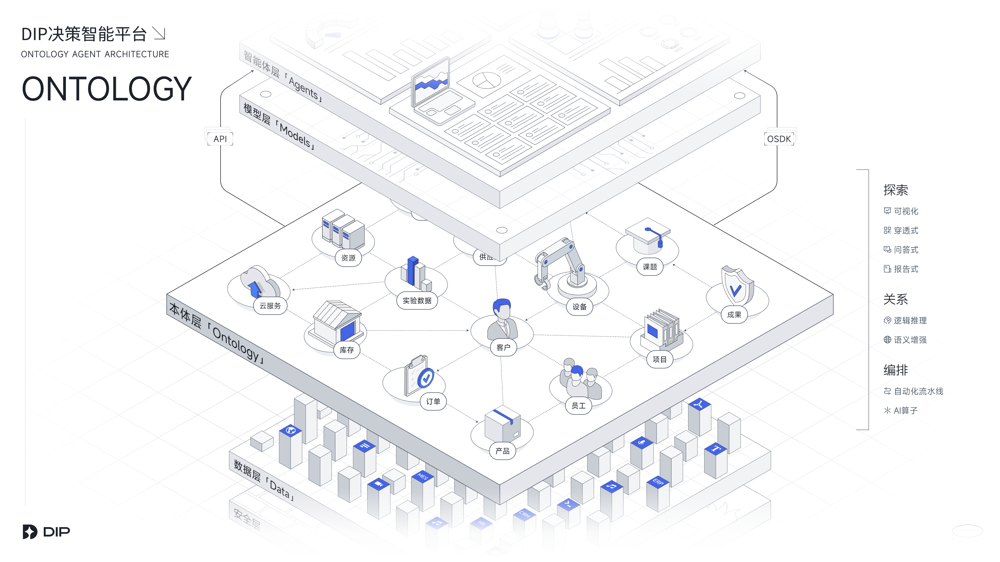

筑牢数据底座，驱动智能决策
DOMA 架构中的核心本体引擎
数据编排
依托自动化流水线与 AI 算子。解决多源异构数据的来源与组织难题，通过转换、合并、拆分等高效处理，淬炼出业务所需的干净数据底座。
本体与关系构建
强化逻辑推理与语义增强。将底层数据转换为业务人员易懂的实体对象，并灵活建立对象间的级联网状关联，构筑坚实的企业业务图谱。
对象探索
提供可视化、穿透式、问答式、报告式四维探索能力。从单一对象出发，沿着关系链一步步全景下钻，辅助复杂业务脉络的精准决策。
从数据感知到决策执行的核心能力
DIP决策智能平台系统架构
基于DOMA架构的核心Ontology层，实现从数据接入到智能决策的全链路能力

可视化的高效本体决策工作流

此处建议替换为真实界面录屏或动图
坚实可靠的技术护城河与云服务
企业级架构与模型基座
全链路 AI 模型支撑
提供贯穿全系统的文本解析、实体识别与语义理解能力。平台支持对接外部大模型，亦可平滑替换为企业自研私有模型，全方位保障核心数据安全。
标准能力开放与云服务部署
业务本体库全面开放，提供标准 API 与 OSDK 工具包接入。同时提供安全合规的云服务环境（如私有云部署），为企业构建专属资源池，高效支撑产品落地各类复杂业务场景。
深入业务场景的智能决策实践
11 大智能体深度赋能
外部营销 | 转化提升
智能营销与客户服务
集成 AI 客服、产品智能推荐、订单进度查询、AI 商机识别四大智能体。提供 7x24 小时智能问答，在对话中精准识别购买意图并推荐关联产品，实现从客服咨询到商机线索的自动化转化。
内部运营 | 协同增效
内部运营与合规风控
聚合内部知识库问答、AI 合同审核、AI 用户行为分析、AI 系统监控告警四大智能体。自动审核合同条款规避风险，实时监控系统数据质量与异常告警，全方位提升企业内部运营协同与安全效能。
数据驱动 | 辅助决策
数据洞察与主动决策
依托智能问数、AI 补货提醒、AI 付款提示三大智能体。在严格权限控制下，支持自然语言秒级穿透查询利润与库存。系统基于数据自动推演，主动推送预警提示，真正落地数据驱动决策。